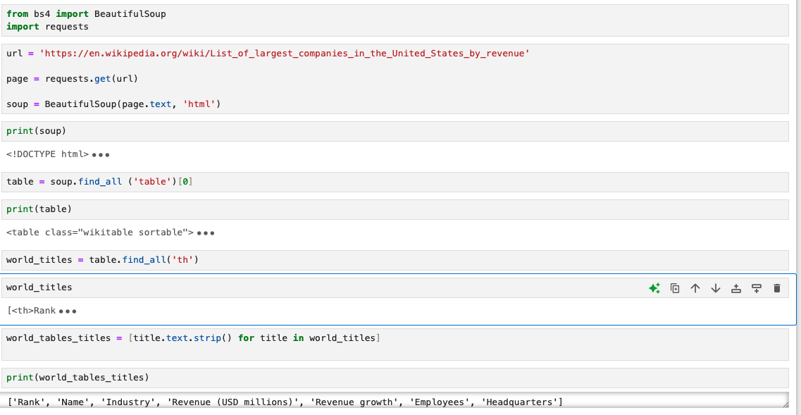
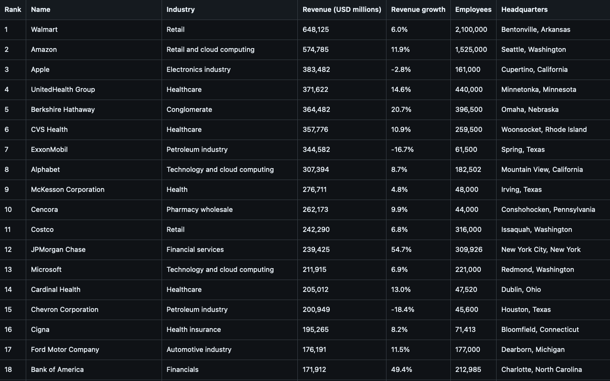
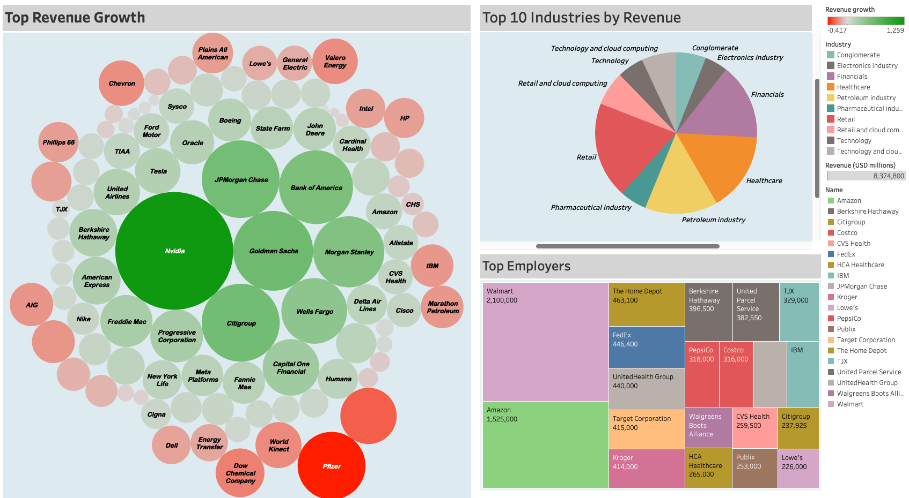

Web Scraping and Analysis of Top Companies in
2024
Exploring Revenue and Employment Trends Through Python and Pandas
Project Overview
This project demonstrates web scraping skills using Python to gather data from the web. It focuses on
extracting company information, including rankings, industries, revenue, and headquarters location. The
project utilizes libraries like BeautifulSoup and requests to pull data, then
organizes and analyzes it with pandas. After scraping, the data is saved as a CSV file,
ready for analysis with visualization tools like Tableau.

Files in This Repository
- webscraping.ipynb: The Jupyter notebook file containing the web scraping script and data analysis code.
- Companies.csv: A dataset of company information scraped from the web, including fields like Rank, Name, Industry, Revenue, and Headquarters.
Project Objectives
- Web Scraping: Gather company data from an online source.
- Data Analysis: Use
pandasto clean, sort, and analyze the data, making it easier to interpret. - Data Visualization: Present insights about the companies, such as revenue distribution and industry representation.
Requirements
This project is built with:
Python 3.x- Libraries:
BeautifulSoupfor parsing HTML contentrequestsfor making HTTP requestspandasfor data handling
Sample Data Fields
Here are some fields in Companies.csv:
- Rank: Ranking of the company by revenue.
- Name: Company name.
- Industry: Primary industry of the company.
- Revenue: Revenue figures in USD millions.

Below is an example visualization of the scraped data:
View this project on GitHub